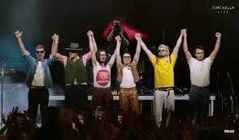
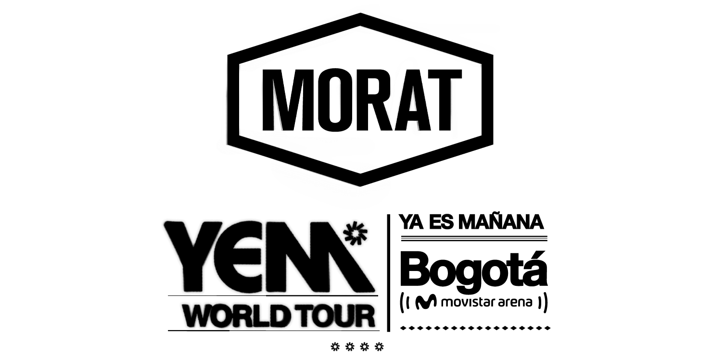
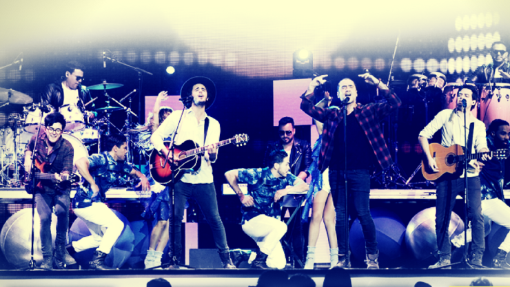

|
Pagina de Fans de Morat |
Éxito Reciente: Coachella y Tecate Pa'l Norte
Morat arrancó su 2026 con presentaciones históricas. En abril, la banda cautivó al público internacional en el festival Coachella (California) los días 11 y 18 de abril. Previamente, en marzo, fueron uno de los actos principales del Tecate Pa'l Norte en Monterrey, México, consolidando su estatus como una de las bandas latinas más influyentes del circuito de festivales actual.


Gira por Sudamérica: Bogotá, Santiago y Buenos Aires
La banda iniciará su tramo por arenas en agosto de 2026. En su natal Bogotá, han agotado seis fechas consecutivas en el Movistar Arena (14 al 23 de agosto). La gira continuará en septiembre con cinco presentaciones en Santiago de Chile y cuatro noches en el Movistar Arena de Buenos Aires, Argentina (24 al 29 de septiembre), marcando un récord de asistencia para el grupo en la región.
Cierre en España y México: Octubre y Noviembre
Para finalizar el año, Morat aterrizará en España en octubre con 9 fechas confirmadas en ciudades como Barcelona, Madrid y Valencia. En noviembre, regresarán a México para presentarse en el Palacio de los Deportes de la CDMX (6, 7, 8, 12, 13 y 14 de noviembre) y cerrarán el tour en la Arena Monterrey los días 2 y 3 de diciembre de 2026.
